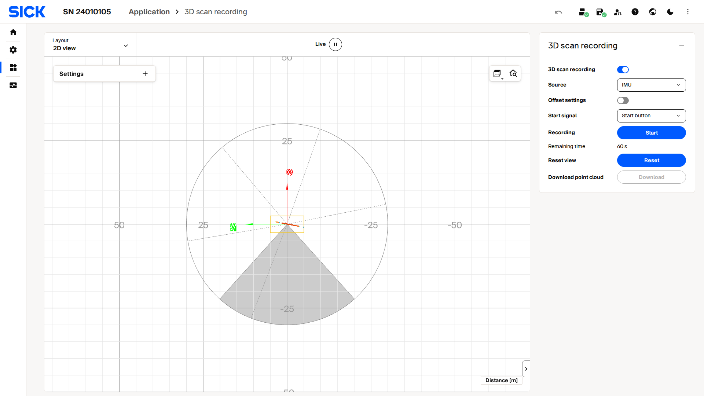

3D with 2D LiDARs¶
The picoScan measures distance and intensity in a single plane. Mounting it on a motorised axis (tilt, rotation, or a linear stage) sweeps that plane through 3D space. If an incremental encoder is attached to the axis, the rotation angle at the moment of each scan is known precisely. This means every 2D point can be rotated into a common 3D frame, and a full sweep becomes a dense 3D point cloud.
Two approaches exist. Choose based on where you want the geometry code to run.
| Approach A (host-side) | Approach B (on-device) | |
|---|---|---|
| Angle source | Encoder wired to the sensor | Encoder (or IMU) wired to the sensor |
| Processing | Host receives raw UDP frames and applies the 3D transform | Device accumulates and saves a PCD file internally |
| Result | One host-generated .pcd per sweep |
Single .pcd from GET /cloud.pcd |
| Best for | Custom transforms, real-time streaming, maximum flexibility | Simple integration, no host-side geometry code |
The sensor tags each UDP scan packet with the encoder tick at capture time, giving frame-accurate synchronisation without timing jitter between the scan and position streams.
Hardware and ports¶
A typical example is a sensor on a motorised tilt axis with a SICK DFS60-series incremental encoder wired to the sensor's encoder input. The same idea applies to rotation or linear stages: what matters is that an encoder on the moving axis feeds the sensor so each scan frame carries a position value.
| Stream | Protocol | Port | Content |
|---|---|---|---|
| Scan data | Compact UDP | 2115 | 2D distance + intensity per frame, with frame sequence number |
| Encoder data | Compact UDP | 7504 | Encoder tick counter, reference tick, frame sequence number |
Enable UDP output on port 7504 and reset the encoder counter at the reference position before you collect data. The Configuration backup & restore flow is a convenient way to apply a validated encoder configuration.
Approach A: host-side transform¶
Synchronise by frame sequence number¶
Both UDP streams carry a frameSequenceNumber. Build a lookup table from that number to the encoder tick, so you can retrieve the exact axis angle for any scan frame even when the two streams arrive slightly out of order:
on encoder packet: encoder_map[packet.frameSequenceNumber] = packet.tickCounter
on scan frame: tick = encoder_map.lookup(frame.frameSequenceNumber) # or most-recent tick
Keep the table bounded in size to avoid unbounded memory growth over long acquisitions.
Coordinate transform¶
Convert each encoder tick to an angle, then rotate the 2D scan point around the axis. For a tilt axis along the world Y-axis with the scan plane horizontal at the reference:
theta = (tick / ticks_per_revolution) * 2 * PI # radians
x_world = x_scan * cos(theta)
y_world = y_scan # lateral axis unchanged
z_world = x_scan * sin(theta)
Set ticks-per-revolution correctly. This value is specific to your encoder model. A mismatch produces a distorted point cloud. Reset the encoder counter at the reference position so tick 0 is your angular origin, and adapt the transform for a different axis orientation or a linear stage.
End-to-end pseudocode¶
Reset the encoder counter to establish tick 0:
Process the two UDP streams and transform each scan frame:
encoder_map = {} # frame_seq_num -> tick
cloud_pts = []
def on_encoder_packet(pkt):
encoder_map[pkt.frameSequenceNumber] = pkt.tickCounter
def on_scan_frame(frame, points_2d):
tick = encoder_map.get(frame.frameSequenceNumber, last_known_tick)
theta = (tick / TICKS_PER_REV) * 2 * PI
for (x, y, intensity) in points_2d:
cloud_pts.append({ x: x*cos(theta), y: y, z: x*sin(theta), intensity })
udp_listen(port=2115, callback=on_scan_frame)
udp_listen(port=7504, callback=on_encoder_packet)
run_until_interrupted()
save_pcd(cloud_pts, "cloud.pcd")
The sick_perception_sdk (C++17) is a good starting point for a host-side implementation.
Approach B: on-device scan merger¶
The on-device scan merger runs entirely on the device. While the sensor rotates, it combines consecutive 2D profiles into a 3D point cloud and saves a .pcd file in device storage. The host only needs to trigger, poll, and download the result with one HTTP GET; no UDP parsing or transform code is required. The angle source is configurable (encoder, or the built-in IMU when no encoder is available).

Live capture of the 3D scan recording interface on a picoScan100.
Configuration parameters¶
| Parameter | Endpoint | Values | Description |
|---|---|---|---|
ScanMergerEnabled |
POST /api/ScanMergerEnabled |
true / false |
Enable the scan merger |
ScanMergerSource |
POST /api/ScanMergerSource |
"ENCODER" / "IMU" |
Rotation reference |
ScanMergeTrigger |
POST /api/ScanMergeTrigger |
0 (METHOD) |
Start/stop via method calls |
RotationOffset |
POST /api/RotationOffset |
{x, y, z} mm |
Sensor offset from the rotation axis |
Setting parameters and calling merger methods requires challenge-response authentication.
State fields¶
| Field | Endpoint | Meaning |
|---|---|---|
MergeRunning |
GET /api/MergeRunning |
true while actively recording |
MergeSaving |
GET /api/MergeSaving |
true while writing the PCD file |
SaveProgress |
GET /api/SaveProgress |
0-100; 100 means the file is ready |
Workflow¶
- Configure the merger parameters and persist with
WriteEeprom. POST /api/ResetScanMergeView: clear any previous recording.POST /api/StartScanMerge:MergeRunningbecomestruewithin a few seconds.- Poll
MergeRunninguntil the desired duration, thenPOST /api/StopScanMerge. - Poll
MergeSaving/SaveProgressuntilSaveProgress = 100. GET /cloud.pcd: download the finished point cloud.
The scan merger is a one-shot recorder: it accumulates on-board and stores a PCD file retrieved by a single REST download. There is no continuous 3D push. For continuous 3D, use Approach A or the Compact stream with your own accumulation.